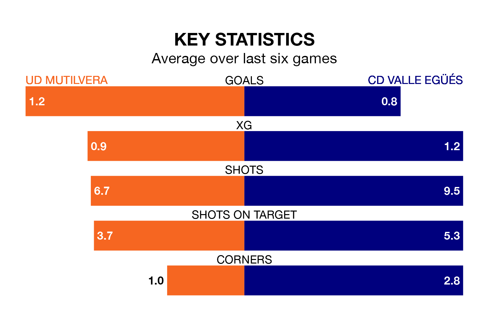

CD Valle Egüés travel to the Estadio Municipal Valle de Aranguren looking to secure a first win in 11 Segunda División RFEF Group 2 games against UD Mutilvera on Sunday.
Valle Egüés have lost six and drawn four matches since they last earned three points – against Náxara CD on January 7.
They face a Mutilvera side who have won four and drawn one over that time.
Valle Egüés are 15th in the table after 27 games, of which they have won five and drawn six, earning 21 points.
Mutilvera are three places ahead of the away team in 12th, with eight wins and six draws putting them on 30 points.
In the last five years, Mutilvera and Valle Egüés have played each other on four occasions. Mutilvera won three of them and they drew once.
On average, Mutilvera scored 2.8 goals and Valle Egüés 1.5 in those matches.
Their last meeting was on November 11, when Mutilvera won 2-0 away.
With 18 goals in 27 games so far this season, the hosts are scoring at below the league average rate with 0.7 goals per game. And they are conceding more than average, letting in 33 goals at a rate of 1.2 per game.
Valle Egüés are also below average scorers, with 0.8 goals per game, compared to a league average of 1.1. They have conceded 1.4 goals per game.
Mutilvera's last match was on March 17, a 2-1 loss against CD Izarra, with Juan Jesús Losantos Parra getting the goal for Mutilvera.
Valle Egüés drew 3-3 with Real Zaragoza B last time out, also on March 17, with Hasier Iriarte Saralegui, Iñigo Burusco Aldave and Miguel Díaz Montes on the scoresheet.
Updated: 10:19 (UTC), 22/03/24